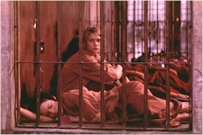

Contents | Features | Reviews | Books | Archives | Store |
 |
|
| Movie Credits | Buy It! |
Brokedown Palace
Review by Cynthia Fuchs
Posted 13 August 1999
| Directed by Jonathan Kaplan Starring Claire Danes, Kate Beckinsale, Bill Pullman, Daniel Lapaine, Jacqui Kim, Lou Diamond Phillips, Amanda De Cadenet, and Paul Walker Written by Adam Fields and David Arata |
Most high school movies end with graduation. There's a prom, a clinch, a sometimes a tragedy for the villain and usually a triumph for the protagonist. A camera circles the happy couple while a trendy pop song fills the soundtrack. Presumably there are lessons learned and the audience goes home happy enough to have witnessed yet another adolescent trauma resolved.
But, you might wonder, what happens after graduation? You might imagine that time continues, that characters grow, prosper, move on, that they get jobs, get married, maybe even get caught doing something they shouldn't be doing. In Brokedown Palace, two girls -- Alice Marano (Claire Danes, trying to live down The Mod Squad) and Darlene Davis (Kate Beckinsale, memorable in Last Days of Disco) - decide they're ready for eleven days of celebration and self-exploration. After surviving the mundane ordeals of high school, these beautiful suburbanites are bored with their boyfriends and looking for an adventure: they tell their oblivious parents they're going to the relatively safe Hawaii, and then, with the meager money they've earned as motel maids, they head off to Thailand, a notoriously cheap and exploitable paradise.
The film, directed by the decidedly unflashy and mostly dependable (if you discount Unlawful Entry) Jonathan Kaplan, opens with the girls' initial views of Bangkok: the streets are crowded, the Buddhas are plentiful, and the native dancers perform in slow motion. Dar and Alice are unsurprisingly enchanted by all this exotic otherness. Feeling confident and a bit giddy with their post-high school freedom, they spend their time shopping, swimming, and crashing fancy hotel poolsides. Then they run headlong into a nightmare of catastrophic proportions, not to mention a nightmare that will seem familiar to those who have seen 1978's Midnight Express or last year's Return to Paradise.
Seduced by an Australian pretty boy (Daniel Lapaine), they agree to go for a weekend in Hong Kong. He buys their tickets and plans to meet them there. They're thrilled by his apparent interest, playing some jealousy games with each other, and so they don't stop to think. Giggling and looking adorable in their styley pants baby ts, they're startled to be stopped at the Bangkok airport by a squad of thuggish cops with big guns. They're even more startled when the cops find 6 kilos of heroin in Alice's backpack.
Being busted for drugs in a third world nation is a terrible thing: you're abused by a series of systems, legal and political. Being busted for drugs in a third world nation in the movies makes these abuses worse by heaping on moral and philosophical earnestness. Busted characters tend to be called on to embody and somehow resolve large, irresolvable questions for their viewers. Not knowing the language or the face-saving ins and outs of the legal system, Dar and Alice are of course left to their own devices, which are thin. Alice, who happens to be the film's narrator (via audiotapes to her lawyer), is sweet and resourceful, but apparently everyone thinks that she might be guilty (of leading Dar astray, if nothing else) and this makes her feel really really bad (and Danes does that sad, trembling-lip face really really well).
Dar is naïve (this being her central character trait): she's the one who slept with the Australian rascal). Plus, she really screws up when she signs a confession (in Thai) that she thinks is a statement of innocence that she's dictated when they're first tossed in jail. Based on this confession, the girls are sent down, locked up with hundreds of other women from all over the world, all hopeless and morose. Darlene calls her middle class insurance salesman dad, who contacts the local DEA rep (Lou Diamond Phillips) (her mother makes one sighing noise in the background during one phone call, period). Alice calls her widower dad, who's played by John Doe (a sign of trouble from frame one). The situation looks grimmer and grimmer.
Brokedown Palace leans heavily on this grimness, to the point that it becomes the movie's primary tonal and moral issue. The prison is ugly, the guards are unforgiving, the fellow inmates are scheming. Director Kaplan has a predilection for working class hard cases and interesting women characters (Heart Like a Wheel, The Accused, Love Field, Immediate Family), and he treats these girls respectfully. In addition, Danes and Beckinsale do fine work within their scripted limitations (act clueless, cry a lot, look peeved). Even when they're tripping from bad medicine (with that cheesy hallucinogenic-cam spinning round the prison yard) or fighting with each other over trivialities, they seem like people you can understand and care about.
However, the story around them is less sound. Producer Adam Fields came up with the story after visiting Thailand and being moved by pleas for help from incarcerated women with similar stories. This real life mission doesn't keep the script, by David Arata, from lapsing into shorthand and nonsense. In prison, the girls befriend a mellow black woman, with a Caribbean accent (at least, she says "mon" repeatedly) and the requisite dreads (she may have a white British lover, but the film doesn't actually explore their relationship, only drops a visual hint or two regarding their possible coupledom). And Alice is targeted by a Thai girl, who seems intent on torturing her, ratting her out to the guards and setting her up for various falls (the shots of the evil Thai girl watching or listening in on Alice from a distance are a bit too dragon-lady).
This hopelessness is temporarily relieved by a U.S. lawyer based in Thailand, Yankee Hank Greene (Bill Pullman, as painfully sincere as he's ever been) and his law partner-wife Yon (Jacqui Kim). In fact, the film handles their relationship in a rather curious way: she's the one who pushes him to look at details of the case -- the shoddy police report and the likelihood that the cops are in cahoots with the Australian -- but he's the one who does the face time with the girls and in court. If it was anyone but Pullman playing the part, you might read this inequality as a function of his movie starness, but here it just seems perverse, because Kim is frankly a more engaging actor and her character is more dedicated and shrewd.
It's clear that Alice and Dar (and perhaps girls like them) are all-too-willing dupes of men -- their fathers, their too-busy-with-college-already boyfriends who visit them once in prison, their invisible government reps, the Australian -- and it's clear that they're far too willing to feel guilty for their youthful recklessness. Brokedown Palace means so well in its posing of ethical dilemmas (would you give up your freedom for your friend's? etc.) that you're inclined to cut it some slack, even if the execution -- the heavy-handed score, the melodramatic confrontations, the relentless images of dreadful Thais, and the striking lack of interest in the U.S. roles in drug trafficking and international political favoring -- is occasionally clumsy. If only it was a little less clumsy.
Contents | Features | Reviews
| Books | Archives | Store
Copyright © 1999 by Nitrate Productions, Inc. All
Rights Reserved.